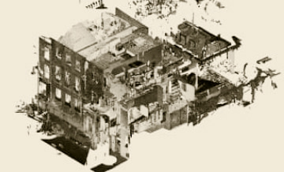

Have any questions? Contact us!
How BIM Works: What Is BIM and BIM Process

The Building Information Modeling or BIM process has been around since the 1970s, but it became pervasive 15 or so years ago. With the evolution of cloud infrastructure and Сomputer-Aided Design (CAD), the architecture, engineering, and construction (AEC) professionals saw considerable improvements in their project workflows.
Today, the BIM design process is supported by government contracts and large AEC companies across the globe, which further spurs its industry-wide adoption. However, many AEC businesses still consider BIM modeling to be a tool for the rich only, which is not true.
This article aims to have the BIM process explained, showcase how to speed up the BIM process in your company, and highlight potential roadblocks that negatively impact the BIM process.
What is BIM?
The Building Information Modeling process allows using intelligent 3D models to facilitate cooperation between stakeholders and all the parties involved in the design, fabrication, construction, and operation of buildings and other architectural objects. Through cost-efficient document coordination and management, as well as building of interactive simulations, BIM enables time-effective collaboration for AEC professionals, speeds up the project delivery, and reduces its maintenance costs.
But how does BIM work in real life, where does it start, and what are the stages involved?
The process begins with the high-level planning of the upcoming construction or infrastructure object. The stakeholders describe what exactly has to be built, what systems there should be, and how they should interact with the existing real-world elements around them.
For example, a building must include multiple components:
- Energy systems
- Plumbing
- Ventilation
- Heating and cooling
- Elevators
- (sometimes) Solar panel or wind turbine systems
- Security systems, etc.
Each of these systems should be represented with a set of interconnected schemes and documents so that updates in one system design could be checked against other systems to avoid costly clashes during construction.
Based on the input received and some 2D drawings and documents, the BIM specialists design architectural and structural models of the object. These 3D models provide an overview of how various object components interact with each other. This allows to quickly resolve any clashes. For example, it helps determine the best ways to position ventilation tubes and ensure the plumbing pipes don’t go through the walls or other structural elements.
As a result of the BIM process, the customer receives a set of interactive 3D models and documents covering all the steps of constructing and operating the building, from factory fabrication of various elements to ongoing facility maintenance.
What are the BIM dimensions?
There are four main types of BIM dimensions:
- 3D, encompassing 3D-generated documents and drawings
- 4D, coupling them with time management
- 5D, adding cost estimates and related data to the mix
- 6D, covering the object lifecycle management
The BIM design process imports the real-world point cloud data to build 3D models of structural components of a future building. But it goes far beyond delivering blueprints only. It covers the whole project lifecycle, from planning to construction to maintenance.
BIM Modeling Services
Looking for a way to improve your design and manage your construction effectively? Powerkh - a trusted BIM & VDC services provider with extensive engineering experience and a portfolio of 200+ successful BIM & VDC projects.
Read morePros and cons of the BIM process
BIM tools make the information shared between different AEC stakeholders more uniform and easily accessible in the cloud and from mobile devices. They also allow real-time commenting and collaborating on the project. Let’s now list the benefits and hidden reefs of the BIM implementation process.
BIM Pros:
- Easier object planning and design. With BIM, you can have a complete visualization of a future building or infrastructure object. You can see how its systems interact with each other long before dozers start clearing the construction site or tube fittings are fabricated at the factory.
- Fewer clashes and reworks By combining the blueprints and 3D models of yet-to-be-built systems, BIM highlights the clashes and allows resolving them. This is a guarantee against costly reworks during construction.
- Lower expenses. From calculating the exact quantity of construction materials needed and up to providing valuable data for future maintenance, BIM helps minimize project costs.
- Prefab support. BIM helps cut the project delivery times by 50% at least, as it combines prefabrication of structural components at the factory with final fabrication on the construction site.
- Repeatability. Great engineering decisions and 3D models of structural components form a library of ready solutions that can be easily reused in future projects.
BIM Cons:
- Incompatibility. BIM software is not yet widespread, and there is always a chance some of your partners or subcontractors might not be able to use the BIM 3D models and documents provided. Well, this is easily solved by discussing the project in advance.
- Licensing costs BIM toolkit is quite expensive to run, as licensing can amount to more than $5,000 a year per user. However, this is an acceptable cost for saving thousands of dollars in reworks.
- Lack of expertise. While BIM models and documents are very easy to read, they are pretty hard to produce. There is a distinct lack of BIM expertise throughout the AEC industry, so building an in-house BIM team might be quite challenging. This is solved through outsourcing BIM tasks to a reliable partner (which also removes the need to pay the licensing fees).
As you can see, there are several important BIM advantages and only a few BIM shortcomings that can be quite easily overcome. Let’s now take a look at how BIM facilitates construction workflows.
BIM usage by architecture, engineering, and construction teams
One of the key challenges of the AEC industry in the past was the need to inform all the parties involved about any roadblocks encountered at any stage of the process. As a result, too much time was lost.
For example, on the construction site, a foreman could not have all the blueprints at hand at all times. If a question came up when he was on the 23rd floor of a building, he had to spend 20 minutes going back to the trailer to consult the drawings. Even worse, if there was an error in drawings or a clash between different systems, this could be resolved only by the design and engineering team, and the work on that task had to be halted till the updated blueprints arrived.
BIM reduces toil and improves collaboration between all the AEC parties by providing centralized real-time cloud access to all the project drawings and documents.
Most importantly, if there is any update mid-project, the BIM team can quickly implement it, and the changes will instantly propagate through all the linked models. Thus, the project stakeholders, designers, architects, and engineering crews always have access to the common data environment, which greatly speeds up the BIM construction process.
Our Case Studies
BIM process explained
The AEC professionals must comply with requirements like ISO 19650 or similar country-specific regulations. In short, this means that while planning the built assets, the customer has to outline the Employer's Information Requirements. This ensures that all the appropriate information required to design, construct, and operate any built assets is timely delivered to all parties in a suitable format.
The “suitable format” definition depends on the degree of the BIM maturity of any given party:
- Level 0 BIM refers to unmanaged sets of CAD documents.
- Level 1 BIM introduces managed 2D and 3D models.
- Level 2 BIM stands for developing collaborative 3D environments with shared data but created in various discipline models. AEC professionals worldwide are now adopting this stage. Level 2 BIM compliance is required by an ever-increasing number of government BIM mandates.
- Level 3 BIM is not properly defined yet, but it is expected to provide centralized access to a single cloud-based collaborative project model covering all stages, from asset design to construction sequencing, operational costs, and facility management data.
Thus, every AEC organization willing to work with government contracts must comply with Level 2 BIM requirements. This might prove difficult due to the challenges described above. Government contracts and regulatory requirements left aside, BIM implementation lays the ground for engaging in large-scale construction projects and opens new business opportunities.
Moving on to BIM stages, there are four of them:
- Predesign. An architect prepares a schematic 3D model of the future built asset in Revit based on the 2D drawings imported. This doubles as a presentation for the customer. After the walkthrough of the rendered model, the customer can provide feedback on the design or request to add some tweaks.
- Schematic design. At this stage, the 4D (scheduling) and 5D (cost) considerations are added to the project. Adding cost estimates to the project will help track the construction efficiency later down the track. Scan to BIM services guarantee that precise models are built from point cloud data. The models are built in the way the real building will be constructed, thus ensuring the right sequencing of the operations. This stage produces models for all key structural components, ventilation, heating, elevators, MEP systems, etc.
- Detailed design. This is a stage of interference check and clash resolution. It is important to establish precise element coordination and ownership at this stage and determine which discipline originally modeled this or that element. The Model Element Author (MEA) has ownership of the elements they created, so if there are any collaborative updates on the elements used in linked models, the MEA decides where to propagate the changes. One of the most essential aspects of BIM is the ability to model every element just once and then update it simultaneously in all the linked models in a particular project.
- Construction. Throughout this phase, the results of the BIM design process come to fruition. Thanks to detailed walkthroughs and renderings, the customer is always on the same page with the AEC team. Design models from the BIM team are now replaced with models from subcontractors who run their own interference checks in the field. Should any design clashes still occur, they can be reported and tracked till resolution using BIM software like Navisworks. Due to scheduling, most construction elements should be prefabricated, and on-site fabrication must accelerate.
As a result of the BIM workflow process, a centralized data environment is created, and the customer saves time and money on design and blueprinting. The prefabrication and fabrication processes go without costly reworks, as all major issues are ironed out in models. The BIM construction process ensures visibility at every stage thanks to scheduling and cost monitoring. The library of models and elements used in a specific project can be stored and easily reused in other projects, saving costs in the long term. Finally, the customer gains real-world facility management data invaluable for further operations of this asset.
How to speed up the BIM process adoption
Despite all the positive outcomes and benefits of BIM adoption, the BIM implementation process still comes with significant challenges. The main roadblocks that negatively impact the BIM process are contractors’ unwillingness to work with the BIM tools and a lack of BIM expertise in the AEC organizations. One of the reasons why contractors might not want to work with BIM is their bad habit of padding their cost estimates. Replacing the contractor might help here.
The lack of BIM skills in-house is harder to correct, so many companies decide to opt for external help. When considering BIM outsourcing vs in-house team, the AEC companies discover they can work in synergy with BIM service providers. This greatly empowers their project capabilities, reduces long-term expenses, and ensures timely project completion and high NPS scores. So, all you have to do to overcome this roadblock is find a reliable BIM partner.
Never miss a new blog post from us!
Conclusion
We hope you now have a working understanding of what BIM is and how the BIM process works. We have outlined the stages of the BIM design process and described the challenges one might face along the way and how to overcome them.
Powerkh is a reputed BIM & VDC services provider that has successfully completed 200+ BIM projects in 11 countries since its establishment in 2016. We can help you benefit from instant access to our BIM expertise and have your projects delivered on time and on budget. Should you have any more questions - contact us, we will be glad to help!
BIM Modeling Services
Have a BIM Project? Talk To Us.
-
Enhancing Productivity in BIM Projects: Best Tips & Strategies
Yevhen Surzhan
Tetiana Rapina

-
Boosting productivity for Scan to BIM Projects
Yevhen Surzhan
Tetiana Rapina

-
7 Benefits of BIM Services in Construction
Kostya Rapina

-
How BIM Works
Yevhen Surzhan

-
The Benefits of Using Laser Scanning in Construction You Can’t Miss
Kostya Rapina
 -
Top 30 Architectural Rendering Companies
Tetiana Rapina

-
Choosing Best BIM Software for Your Project in 2021
Yevhen Surzhan

-
As-Built Drawings 101: All You Need to Know
Kostya Rapina

-
BIM Outsourcing vs in-House Teams
Kostya Rapina

-
Introduction to Virtual Design and Construction
Yevhen Surzhan

-
Construction RFI: Template, Best Practices
Kostya Rapina

-
How to Hire a BIM Team
Yevhen Surzhan